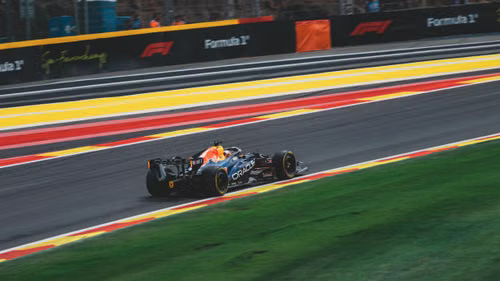

Bienvenido al Gran Premio
¿Por qué la Fórmula 1 se considera la reina del automovilismo?
Aunque existen vehículos más rápidos en la línea recta, con mayor capacidad de carga o con mejor rendimiento en terrenos difíciles y fuera de pista, la clave está en su tecnología integral. En la Fórmula 1 se combinan sistemas de vanguardia que trabajan en conjunto, permitiendo a los monoplazas tomar curvas a velocidades increíbles o acelerar de 0 a 100 km/h en tan solo 2 segundos.

Imágenes: Fotos de coches de Fórmula 1. Fuente: Pexels.
Pilares fundamentales de la competición
- Ingeniería precisión: Innovación constante en la aerodinámica y chasis de fibra de carbono.
- Unidades de potencia híbridas: Motores de alta eficiencia con sistemas de recuperación de energía (ERS).
- Estrategia de carrera: Gestión de neumaticos, las paradas en boxes (pit stops) y telemetría en tiempo real.